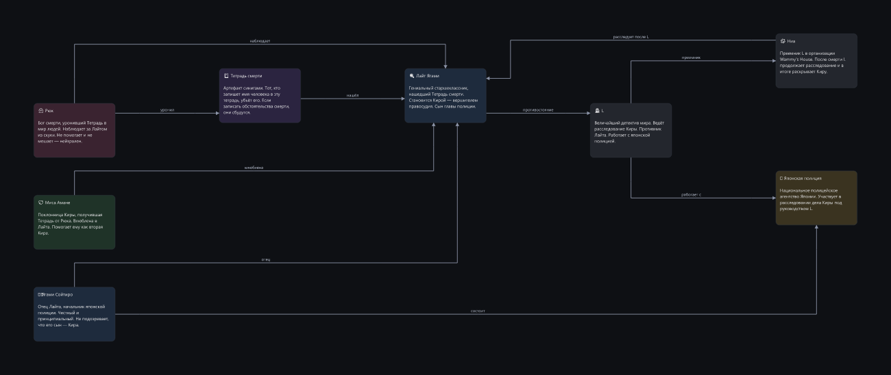
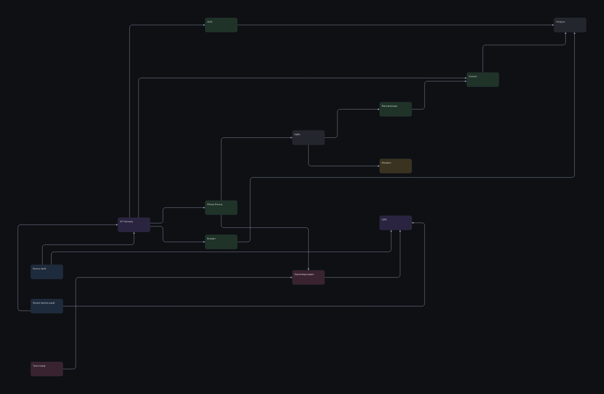
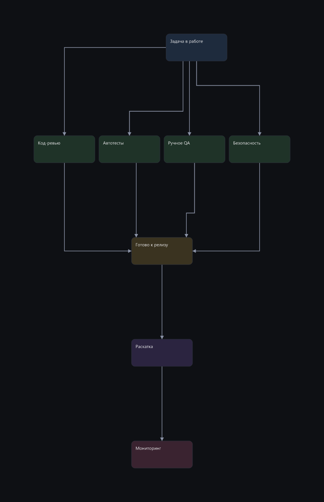
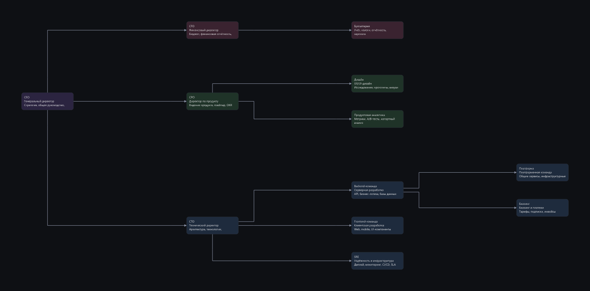

Маршрут в обеих колонках один и тот же — те же порты, те же изгибы, та же ломаная. Различается только то, как нарисованы углы, поэтому доску можно переключать между режимами, ничего не перекладывая, и все замеры сохраняют смысл.



